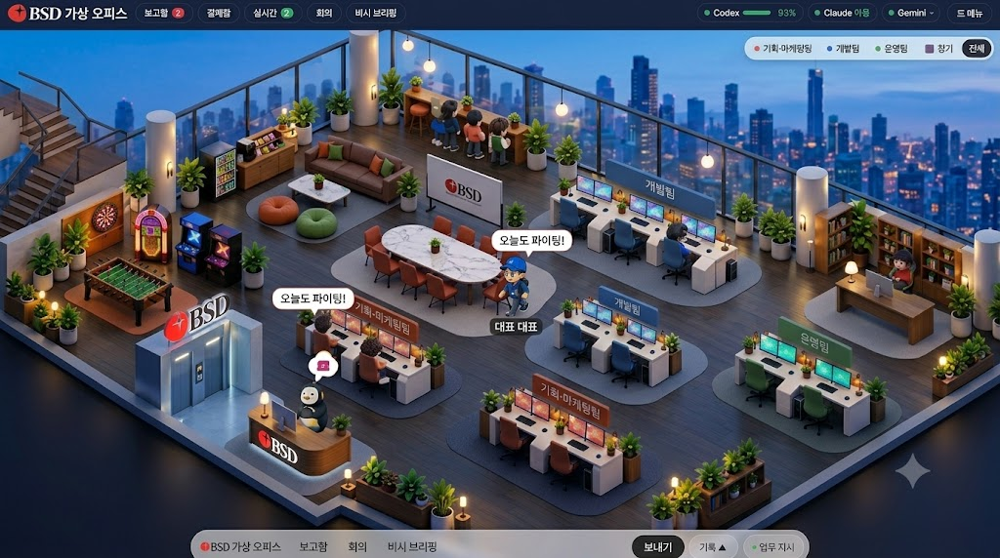

01 · 구도와 공간
왼쪽 계단·오락 공간 → 뒤쪽 라운지·창가 바 → 중앙 회의 탁자 → 오른쪽과 앞쪽 팀별 벤치 → 전면 엘리베이터·리셉션.
기본 시점은 고정하고, 선택한 직원에 대한 확대와 기본 시점 복귀를 제공합니다. 상단바 31px, 하단바 약 29px를 1024×572의 기준으로 삼습니다. 입력·보고 패널은 필요할 때만 확장합니다.

첨부 이미지의 구도, 공간 밀도, 재질과 캐릭터를 재현하는 제작 기준
아래 이미지는 사용자가 제공한 원본 기준 이미지입니다.
번호를 선택하면 각 공간의 위치·필수 자산·제작 조건을 확인할 수 있습니다.

기준 1024 × 572 · 화면 좌표는 이미지에서 판독한 근사 중심점입니다. 실제 3D 치수는 카메라 투영을 맞춘 후 결정합니다.
같은 1024 × 572 크기에서 원본과 현재 앱을 비교합니다. 현재 앱은 아래 읽기 전용 프레임에서 표시됩니다.
현재 화면은 설계 기준을 통과하지 못했습니다. 구도·재질·배경·가구 밀도가 주요 재작업 대상입니다.
왼쪽 계단·오락 공간 → 뒤쪽 라운지·창가 바 → 중앙 회의 탁자 → 오른쪽과 앞쪽 팀별 벤치 → 전면 엘리베이터·리셉션.
기본 시점은 고정하고, 선택한 직원에 대한 확대와 기본 시점 복귀를 제공합니다. 상단바 31px, 하단바 약 29px를 1024×572의 기준으로 삼습니다. 입력·보고 패널은 필요할 때만 확장합니다.
차콜 월넛 바닥, 얇은 금속 창 프레임, 흰 대리석, 패브릭 의자, 촘촘한 식물. 푸른 도시의 환경광에 따뜻한 기둥 조명·펜던트·스탠드를 더합니다.
정적 공간의 간접광·접촉 그림자는 베이크하고 캐릭터의 그림자는 실시간으로 처리합니다. 단순 도형과 단색 재질의 반복으로 대체하지 않습니다.

리셉션 전면·엘리베이터 상단·회의 화이트보드에 원본 로고를 적용합니다. 심볼은 상단바와 작은 표식에 사용합니다. 원본 비율과 여백을 유지하고 글자를 다시 생성하지 않습니다.
KYU의 파란 모자, 안경, 검은 상의, 데님, 운동화, 키링을 3D에서도 보존합니다. 다른 직원도 같은 조형과 눈·머리카락·재질 체계로 제작합니다.
대기 → 바라보기 → 회전 → 걷기 → 감속 → 자리 정렬 → 착석 → 타이핑 → 기립 → 회의 이동. 실제 골격 애니메이션, 좌석 예약, 손·발 접지를 각각 검증합니다.
제공된 KYU 캐릭터 시트 보기| 단계 | 다음 단계로 넘어가는 조건 | 상태 |
|---|---|---|
| 원본 고정 설계 | 15개 공간 앵커·필수 자산·빛·브랜드·동작·실행 경계 명시 | 문서화 |
| 카메라·공간 | 전체 구도와 5개 업무 벤치를 동일 크기 캡처로 비교 | 재작업 필요 |
| 대표 자산 | 개발 A 한 벤치 + KYU 한 명의 확대 품질과 동작 검증 | 미통과 |
| 전체 사무실 | 같은 품질의 가구·식물·인물로 확장, 30초 동작·성능 측정 | 대기 |
| 실제 운영 회귀 | 지시·실행·결과·교차 검수, 실패·취소·재접속 확인 | 새 아트 적용 후 검증 |
공간과 캐릭터 ← 업무 이벤트 ← 기존 로컬 서버·SQLite ← Claude Code / Codex CLI. 실제 실행 상태와 환경 캐릭터의 장식 동작을 구분합니다. 사용량을 제공하지 않으면 임의의 퍼센트를 표시하지 않습니다.
현재 확인된 실행 범위는 프로젝트의 제한된 스냅샷을 바탕으로 새 결과물을 생성하고 다른 제공자가 검수하는 흐름입니다. 기존 저장소를 자유롭게 수정하거나 모든 테스트를 자동 수행하는 기능까지 완료된 것으로 표시하지 않습니다.
Higgsfield에서 만든 이미지·시트와 실제 GLB·리깅·애니메이션을 구별합니다. 이전 실험 씬은 이 설계의 최종 자산으로 승인되지 않았습니다.
전체 설계 명세 열기